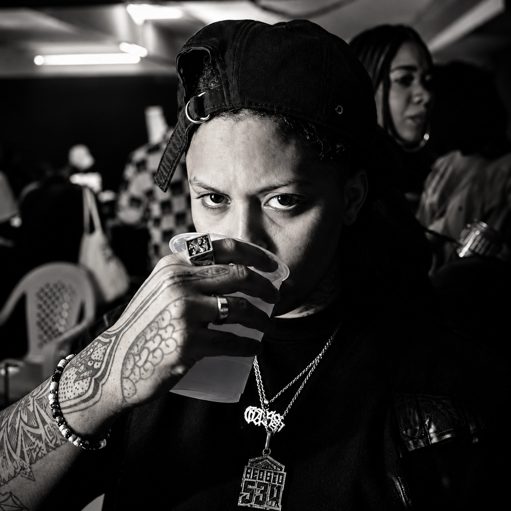

0302 / THE ROYAL LINE-UP
DJ
GABS
DJ SETREDUTO 534PRODUÇÃO EXECUTIVA
Deejay Gabs atua no núcleo do Reduto 534, selo e coletivo ligado à Zona Norte do Rio. Fontes do circuito apontam Gabs à frente da produção executiva do selo e registram sua presença em eventos próprios do Reduto.
Nas edições do 808 Pulse, aparece comandando a pista em um contexto que atravessa trap, drill, funk, jersey club, afrobeat e hip hop. No Royale, essa experiência chega em formato DJ set.
NO ROYALE
A presença de Gabs conecta o GUTT ROYALE a uma frente ativa do underground carioca e à arquitetura de eventos do Reduto 534.